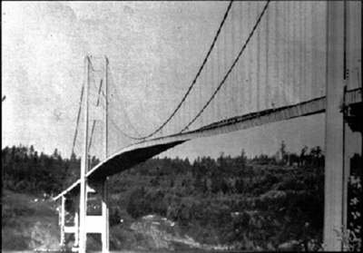

![The given figure shows three pictures of a horizontal viewed single finger containing a string, suspended downward vertically, being tied to a paddle ball at its downward end. In the first figure the ball is stretching up and down very slowly having less displacement, the displacement shown in the figures as faded shades of the ball and is depicted as 2X. Whereas in the second figure the movement of the ball is highest, while in the third the movement is least. In all the three figures the ball is at its equilibrium with respect to its movement. The frequency, f, for the first figure is very low, for the second figure as f not, while for the third figure it is highest.](Figure_17_08_02a.jpg)
The original, as published: OpenStax, College Physics 2e, Urone, Hinrichs, section 16.8 Forced Oscillations and Resonance. © Rice University. CC BY-NC-SA 4.0, https://creativecommons.org/licenses/by-nc-sa/4.0/. Imported as published, from https://openstax.org/books/college-physics-2e/pages/16-8-forced-oscillations-and-resonance
By the end of this section, you will be able to:
Sit in front of a piano sometime and sing a loud brief note at it with the dampers off its strings. It will sing the same note back at you—the strings, having the same frequencies as your voice, are resonating in response to the forces from the sound waves that you sent to them. Your voice and a piano’s strings is a good example of the fact that objects—in this case, piano strings—can be forced to oscillate but oscillate best at their natural frequency. In this section, we shall briefly explore applying a periodic driving force acting on a simple harmonic oscillator. The driving force puts energy into the system at a certain frequency, not necessarily the same as the natural frequency of the system. The natural frequency is the frequency at which a system would oscillate if there were no driving and no damping force.
Most of us have played with toys involving an object supported on an elastic band, something like the paddle ball suspended from a finger in the figure. Imagine the finger in the figure is your finger. At first you hold your finger steady, and the ball bounces up and down with a small amount of damping. If you move your finger up and down slowly, the ball will follow along without bouncing much on its own. As you increase the frequency at which you move your finger up and down, the ball will respond by oscillating with increasing amplitude. When you drive the ball at its natural frequency, the ball’s oscillations increase in amplitude with each oscillation for as long as you drive it. The phenomenon of driving a system with a frequency equal to its natural frequency is called resonance. A system being driven at its natural frequency is said to resonate. As the driving frequency gets progressively higher than the resonant or natural frequency, the amplitude of the oscillations becomes smaller, until the oscillations nearly disappear and your finger simply moves up and down with little effect on the ball.
the figure shows a graph of the amplitude of a damped harmonic oscillator as a function of the frequency of the periodic force driving it. There are three curves on the graph, each representing a different amount of damping. All three curves peak at the point where the frequency of the driving force equals the natural frequency of the harmonic oscillator. The highest peak, or greatest response, is for the least amount of damping, because less energy is removed by the damping force.
![The given graph is of amplitude, X, along y axis versus driving frequency f, along x axis. There are three points on the x axis as f not divided by two, f not, three multiply f not divided by two. There are three curves along the x axis, in a one crest oscillation way, which are one over each other in correspondence. The curves start at a point just over the origin point and ends up at a same level along the x axis on the far right. The crests of the three curves are exactly over the f not point. The uppermost crest shows the small damping, whereas the middle one shows the medium damping, and the last one below shows the heavy damping.](Figure_17_08_03a.jpg)
It is interesting that the widths of the resonance curves shown in the figure depend on damping: the less the damping, the narrower the resonance. The message is that if you want a driven oscillator to resonate at a very specific frequency, you need as little damping as possible. Little damping is the case for piano strings and many other musical instruments. Conversely, if you want small-amplitude oscillations, such as in a car’s suspension system, then you want heavy damping. Heavy damping reduces the amplitude, but the tradeoff is that the system responds at more frequencies.
These features of driven harmonic oscillators apply to a huge variety of systems. When you tune a radio, for example, you are adjusting its resonant frequency so that it only oscillates to the desired station’s broadcast (driving) frequency. The more selective the radio is in discriminating between stations, the smaller its damping. Magnetic resonance imaging (MRI) is a widely used medical diagnostic tool in which atomic nuclei (mostly hydrogen nuclei) are made to resonate by incoming radio waves (on the order of 100 MHz). A child on a swing is driven by a parent at the swing’s natural frequency to achieve maximum amplitude. In all of these cases, the efficiency of energy transfer from the driving force into the oscillator is best at resonance. Speed bumps and gravel roads prove that even a car’s suspension system is not immune to resonance. In spite of finely engineered shock absorbers, which ordinarily convert mechanical energy to thermal energy almost as fast as it comes in, speed bumps still cause a large-amplitude oscillation. On gravel roads that are corrugated, you may have noticed that if you travel at the “wrong” speed, the bumps are very noticeable whereas at other speeds you may hardly feel the bumps at all. the figure shows a photograph of a famous example (the Tacoma Narrows Bridge) of the destructive effects of a driven harmonic oscillation. The Millennium Bridge in London was closed for a short period of time for the same reason while inspections were carried out.

A famous magic trick involves a performer singing a note toward a crystal glass until the glass shatters. Explain why the trick works in terms of resonance and natural frequency.
The performer must be singing a note that corresponds to the natural frequency of the glass. As the sound wave is directed at the glass, the glass responds by resonating at the same frequency as the sound wave. With enough energy introduced into the system, the glass begins to vibrate and eventually shatters.
How is constant amplitude sustained in forced oscillations?
Why are soldiers in general ordered to “route step” (walk out of step) across a bridge?
How much energy must the shock absorbers of a 1200-kg car dissipate in order to damp a bounce that initially has a velocity of 0.800 m/s at the equilibrium position? Assume the car returns to its original vertical position.
384 J
If a car has a suspension system with a force constant of , how much energy must the car’s shocks remove to dampen an oscillation starting with a maximum displacement of 0.0750 m?
(a) How much will a spring that has a force constant of 40.0 N/m be stretched by an object with a mass of 0.500 kg when hung motionless from the spring? (b) Calculate the decrease in gravitational potential energy of the 0.500-kg object when it descends this distance. (c) Part of this gravitational energy goes into the spring. Calculate the energy stored in the spring by this stretch, and compare it with the gravitational potential energy. Explain where the rest of the energy might go.
(a). 0.123 m
(b). −0.600 J
(c). 0.300 J. The rest of the energy may go into heat caused by friction and other damping forces.
Suppose you have a 0.750-kg object on a horizontal surface connected to a spring that has a force constant of 150 N/m. There is simple friction between the object and surface with a static coefficient of friction . (a) How far can the spring be stretched without moving the mass? (b) If the object is set into oscillation with an amplitude twice the distance found in part (a), and the kinetic coefficient of friction is , what total distance does it travel before stopping? Assume it starts at the maximum amplitude.
Engineering Application: A suspension bridge oscillates with an effective force constant of . (a) How much energy is needed to make it oscillate with an amplitude of 0.100 m? (b) If soldiers march across the bridge with a cadence equal to the bridge’s natural frequency and impart of energy each second, how long does it take for the bridge’s oscillations to go from 0.100 m to 0.500 m amplitude?
(a)
(b) s
natural frequency the frequency at which a system would oscillate if there were no driving and no damping forces
resonance the phenomenon of driving a system with a frequency equal to the system's natural frequency
resonate a system being driven at its natural frequency